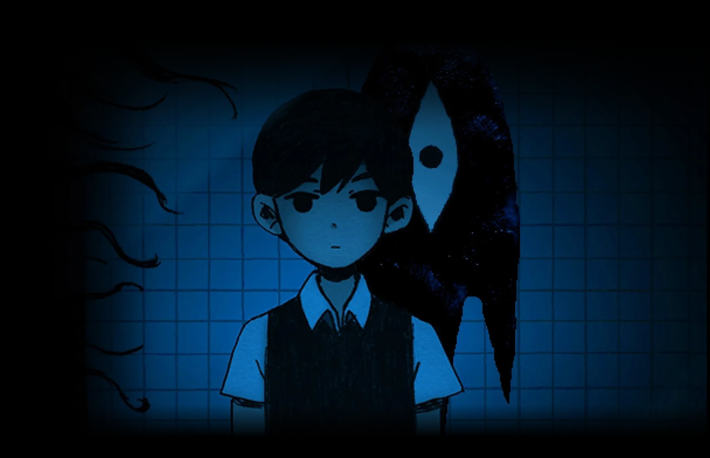
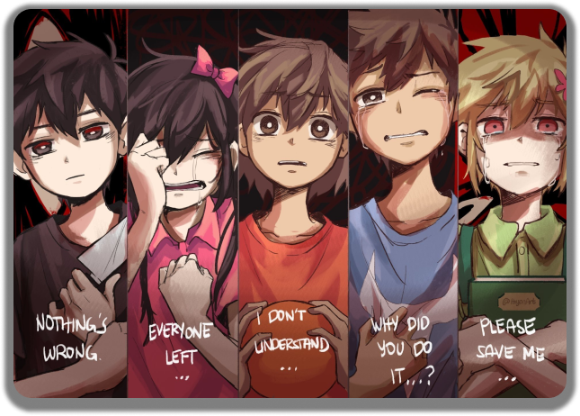
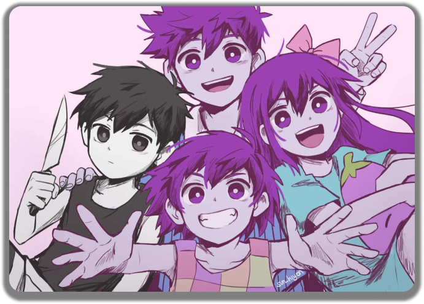

Omori
Omori é um jogo emocionalmente cativante que mergulha fundo nas profundezas da psique humana. A narrativa envolvente e os personagens complexos criam uma atmosfera única de suspense e intriga. A estética pixel art e a trilha sonora melancólica contribuem para a experiência marcante que esse jogo proporciona.

Omori é um jogo visualmente deslumbrante, com uma estética pixel art encantadora que evoca um senso de nostalgia. A trilha sonora atmosférica e os ambientes meticulosamente detalhados contribuem para a imersão profunda nesse mundo surreal. É uma experiência intensa que ficará com você muito tempo depois de terminar o jogo.
Omori é uma jornada sombria e perturbadora que desafia as expectativas do gênero RPG. Com seu enredo envolvente e reviravoltas surpreendentes, o jogo mantém você intrigado do início ao fim. Os temas complexos e a abordagem madura da história o tornam uma experiência verdadeiramente única.
Omori é uma jornada sombria e perturbadora que desafia as expectativas do gênero RPG. Com seu enredo envolvente e reviravoltas surpreendentes, o jogo mantém você intrigado do início ao fim. Os temas complexos e a abordagem madura da história o tornam uma experiência verdadeiramente única.


Omori é um mergulho profundo em um mundo repleto de mistério e simbolismo. Os quebra-cabeças desafiadores e os combates estratégicos mantêm o jogador envolvido, enquanto a história complexa e a atmosfera melancólica criam uma experiência emocionalmente impactante.